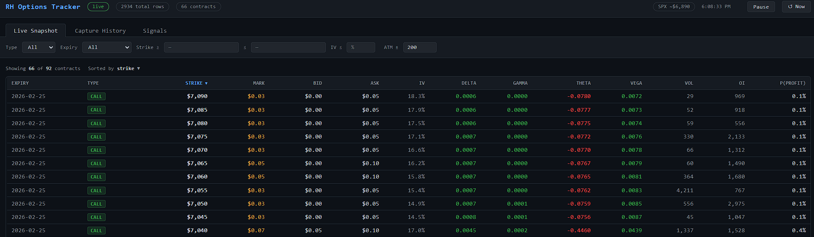

Hi, my name is
I'm a Software Development Engineer at Amazon Web Services, where I design and build large-scale distributed systems and cloud infrastructure serving billions of daily requests across every AWS data center worldwide.
I'm a Software Development Engineer at Amazon Web Services based in Santa Clara, CA, as part of the Network State Manager (NSM) team which owns and operates a large-scale distributed system that vends authoritative networking data for all AWS data centers worldwide.
I graduated from UCLA with a B.S. in Computer Science (GPA: 3.76) and have been building production-grade systems since my internship at AWS in 2022. I'm most energized by backend engineering challenges — distributed systems, event-driven data pipelines and analysis, and cloud infrastructure.
Outside of work, I enjoy playing chess, making games, and discovering new music on Spotify.
University of California, Los Angeles
B.S. Computer Science · GPA: 3.76 · 2019 – 2023
Amazon Web Services · Santa Clara, CA
Amazon Web Services · Seattle, WA
Full stack mobile application that connects nearby users by sharing their Spotify listening history in real time.

Real-time SPX options intelligence system that intercepts live options data from Robinhood's browser network, stores it locally in SQLite, and runs a self-improving ML signal engine to surface actionable trade signals with confidence scores.